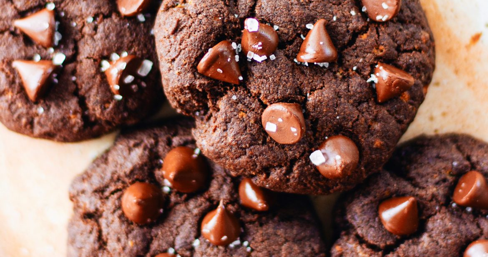

Chocolate Chip Cookies

Description
Bake a batch of classic, bakery-style chocolate chip cookies that are crispy on the outside and chewy on the inside. This foolproof recipe guarantees perfect results every time.
Ingredients
- Flour
- Butter
- Sugar
- Eggs
- Chocolate Chips
- Baking Soda and Vanilla
Directions
- Gather all ingredients and preheat your kitchen oven to 375 degrees F (190 degrees C).
- Cream the softened butter, white sugar, and brown sugar together in a large mixing bowl until smooth and fluffy.
- Beat the eggs into the mixture one at a time. Stir in the vanilla extract, baking soda, and salt until fully incorporated.
- Gradually mix in the flour until a soft dough forms. Fold in the chocolate chips evenly using a spatula.
- Drop rounded spoonfuls of dough onto ungreased baking sheets. Bake for 10 to 12 minutes until edges are golden. Let cool.